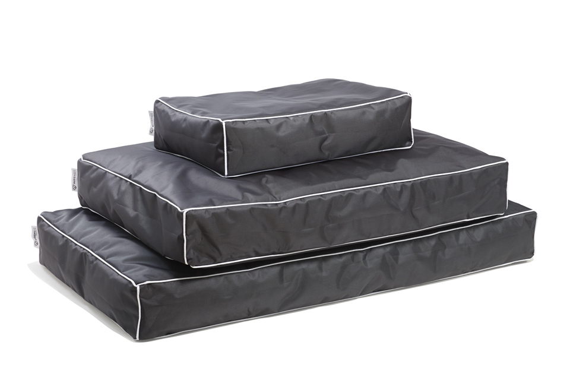
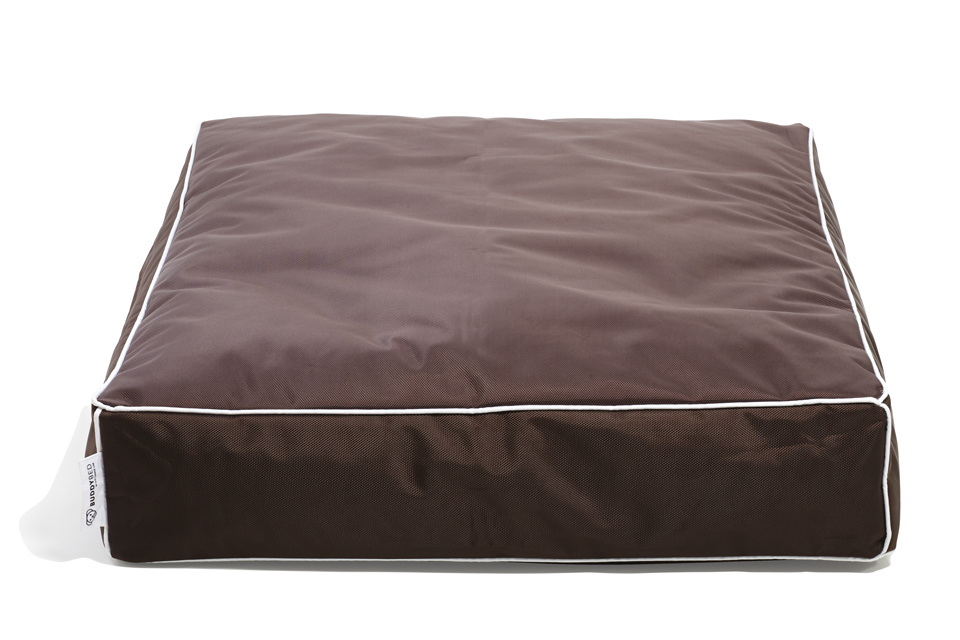
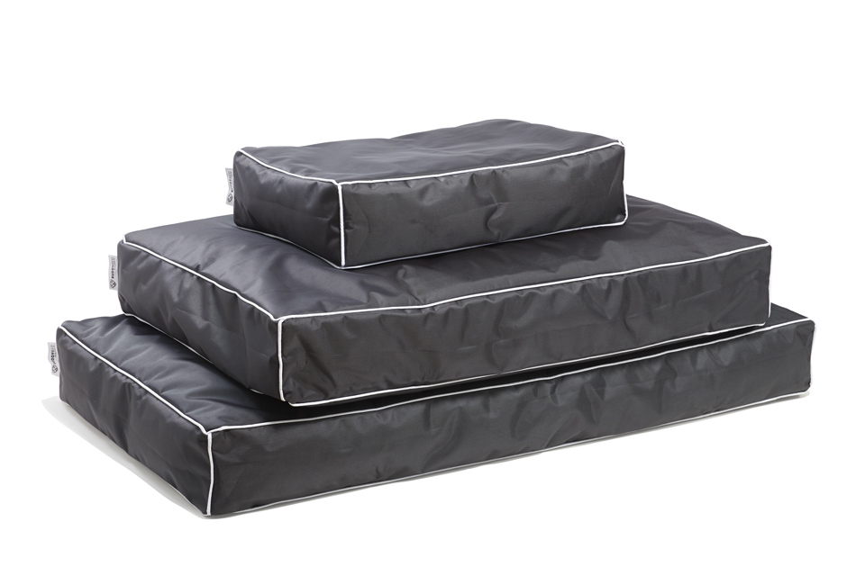
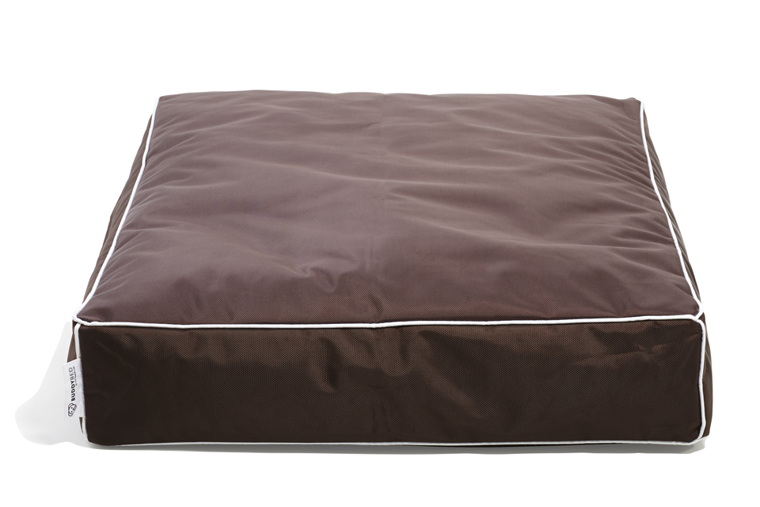

Introduction
All dog lovers want the same thing: for their friends to be happy and healthy. And one of the best ways to keep your pup content is to make sure he or she gets a good night’s rest after a long, hard day of playing. Being pet owners ourselves, we wanted to create a bed fit for our own buddies, one that would not only keep them comfortable in their younger years, but provide therapeutic support as they grew older.
We crafted the BuddyBed specifically for the pet owner who values their dog’s well-being.The BuddyBed’s recycled styrofoam bead interior contours around your dog’s unique shape, providing a warm and wonderful night’s sleep. Your best friend will love sinking into one of our deluxe BuddyBeds, complete with a thick furry top for extra warmth and protection - helping your puppy stay snug and cozy all night long.
 




Impechabel Design
We designed the BuddyBed’s color scheme with the owner in mind. The Shadow Red, Hunter Grey or Bailey Brown colors are neutral enough to blend in with your living room, yet strong enough to hide your dog’s shedding. Whichever color you choose, the BuddyBed helps highlight your home’s personal style, while the popular rectangular shape looks great anywhere.
Our BuddyBeds are:
- Eco-friendly.
- Machine washable (tumble dry or no heat).
- Dirt-resistant.
- Water-resistant.
- Reinforced with double-stitched seams for extra protection!
BuddyBed: The last dog bed you’ll ever need.
About our company
The toughest part of finding a great dog bed is choosing one that not only looks nice, but stands up to dirt, liquid, and rough clawing or tearing. Dog beds are notoriously hard to clean and keep looking nice. So the third attribute we considered when creating the BuddyBed was durability.
That’s why we designed the BuddyBed with a removable and eco-friendly weather-resistant cover. It’s super easy to clean - just zip it off and throw it in the washing machine to keep your BuddyBed clean and smelling fresh. Whether your puppy likes to snuggle indoors or play hard in the rain, your BuddyBed will always stay beautiful.